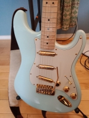
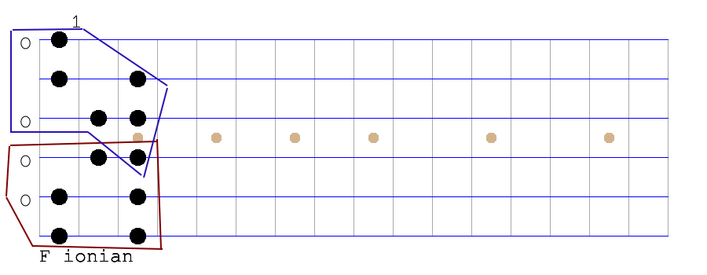

Guitar Resurrection
 My friend Mike gave me this guitar he built (from new parts, not used scrap!). So I decided it was time to re-learn the basics of playing the instrument...
{kind=link}
I went to music skool, way back when, so I knew a few things - like what and how to practice. But I never did any sort of complete regimen at school. cry
Now I both engineer software and make music, so I often put the two together if I can. :-)
Anyway back at school, I only "muscle-memorized" two modes (scale degrees of a key center) - "Ionian" (major) and "Aeolian" (minor). But there are five more!
So I decided to use my fretboard diagramming library to produce each modal scale, in the key of F, in two octaves on the guitar.
And here is the animation of going up and down the fretboard that I made, after running my modes program, with this imagemagick command:
$ convert -delay 70 F-mode-0*.png F-mode-06.png F-mode-05.png F-mode-04.png F-mode-03.png F-mode-02.png animated-F-modes.gif

Ok. Enough jabbering. Time to practice...